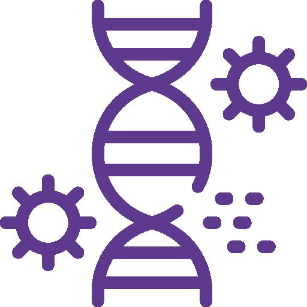
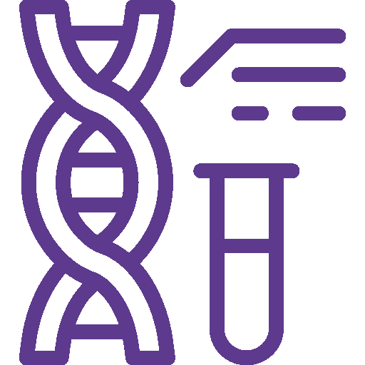
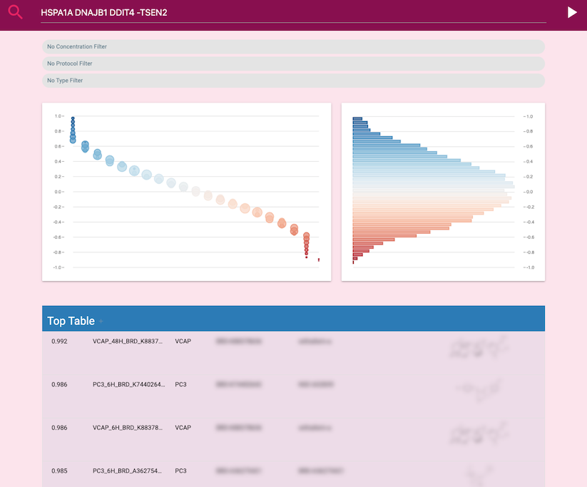
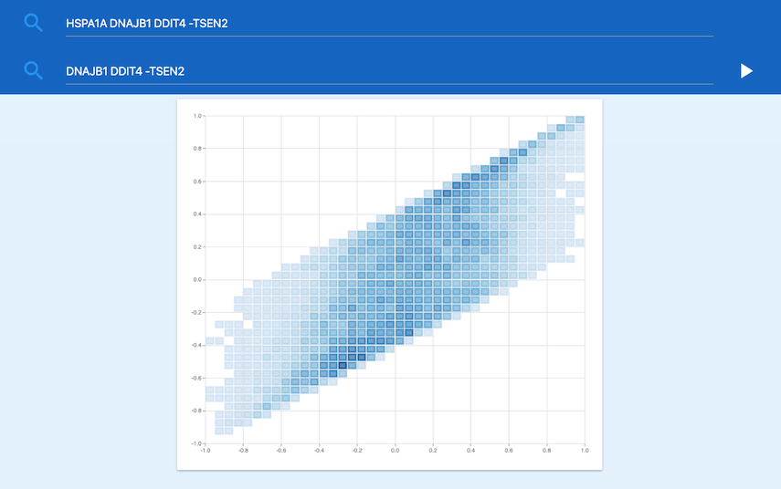
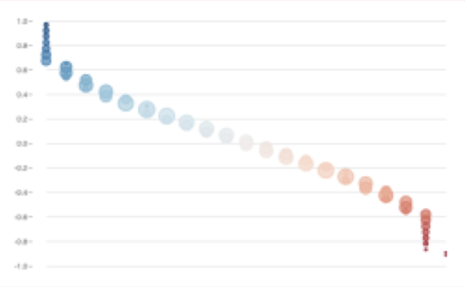
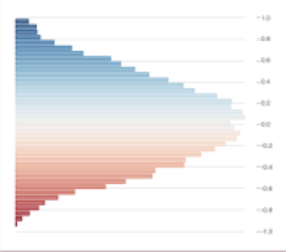
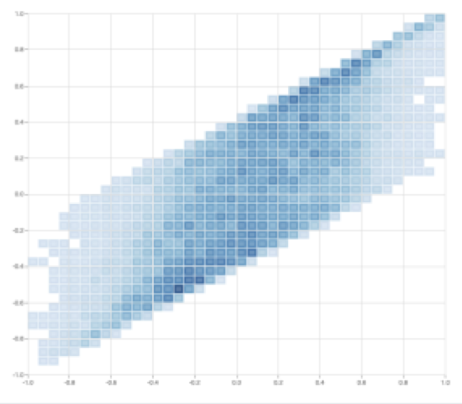

ComPass is a powerful application for querying and analyzing Connectivity Map data, also known as L1000 data but could be extended for other types of data as well. It captures the essential tasks that researchers ordinarily execute using batch processes in a web interface. It provides four interactive workflows.
ComPass also offers a variety of technical features, including compound and target annotations, the ability to export data to CSV and JSON formats, and more.
ComPass is open source and is freely available.
For professional use, we recommend a support contract.
The disease workflow allows users to search for samples or compounds that are highly correlated or anti-correlated to a gene signature related to a specific disease or other biological effect.

The Target workflow enables users to search for compounds that are known to affect well-known and experimentally validated target genes in the L1000 subset of genes. Users can view the correlation of these targets with all available samples.
The Correlation workflow enables users to compare two gene signatures (or two compounds) by calculating and plotting Zhang scores. The data points in this plot are binned to ensure scalability.

The Compound workflow allows users to generate a gene signature of genes that are highly correlated with samples available for a specific compound. It also performs a similarity analysis on the generated signature, similar to the Disease workflow.



A gene signature of genes that correlate highly with the samples available for this compound.

A similarity analysis is performed on the generated signature, similar to the Disease workflow.

Compare two gene signatures (or two compounds) by calculating and plotting the Zhang scores. Note that the data points in this plot are binned to ensure scalability.
If you’re interested in learning more about ComPass and seeing it in action, please don’t hesitate to contact us for a demo. Our team would be happy to show you how ComPass can help you with your Connectivity Map data analysis needs.